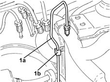
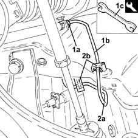
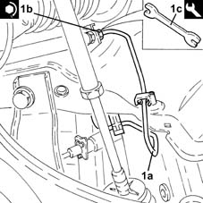

3340B55 central brake pipe to lh - r r
- Path
- Procedures > 33 BRAKING SYSTEM > 3340 A(B.S. ANTI-LOCK BRAKING SYSTEM .) > 3340B abs system pipes > 3340B55 central brake pipe to lh - r r
- Kind
- repair procedure (removal / refitting; the operation number is the code)
- Applies to
- all engines; all production periods
- Interactive page
- https://sloeber94.github.io/elrnDB-lYpsln/en/#/2429198
Applies to: all engines; all production periods
 Removing
Removing
 Refitting
RefittingPosition the vehicle on the ramp.
Proceed with removal 5530B10 battery - r+r .
Proceed with removal 5530B52 Battery DRIP TRAY/SUPPORT - R.R. .
Proceed with removal 5505A13 supplementary junction control unit in engine bay - r r .
Proceed with removal 3340A12 A'B.S. system. - electronic and hydraulic CONTROL UNIT R.R. .
1. Release the rigid pipe from the hydraulic control unit to the left front brake (1a) from the fastenings (1b).

Applies to: all engines; all production periods
Proceed with removal 4450B02 left front wheel r r .
Proceed with removal 7055B90 Left front WHEEL ARCH LINER - R.R. .
1. Undo the connector (1a) and disconnect the rigid pipe from the hydraulic unit to the front right brake (1b), flexible pipe side, using tool (1c).
 | Name | Country |
|---|---|---|
1c | Box wrench for brake fittings | 1.856.132.000 |
2. Remove the rigid pipe from the hydraulic unit to the front left brake (2a) after releasing it from the attachments (2b).

Applies to: all engines; all production periods
Refitting
RemovingPlace in its seating the rigid pipe from the hydraulic unit to the front left brake and secure it with its fastenings in the wheelarch.
1. Connect the rigid pipe from the hydraulic control unit to the front right brake (1a), flexible pipe side, and tighten the connector (1b) to the recommended torque using tool (1c).
 | Fastening | Component | Ø | Value (daNm) |
|---|---|---|---|---|
1b | - | PIPE FROM CONTROL UNIT TO FRONT BRAKES | - | (Flexible pipe side) 1.4 ÷ 1.8 |
| Name | Country |
|---|---|---|
1c | Box wrench for brake fittings | 1.856.132.000 |

Applies to: all engines; all production periods
Proceed with refitting 3340A12 A'B.S. system. - electronic and hydraulic CONTROL UNIT R.R. .
Proceed with refitting 5505A13 supplementary junction control unit in engine bay - r r .
Proceed with refitting 5530B52 Battery DRIP TRAY/SUPPORT - R.R. .
Proceed with refitting 5530B10 battery - r+r .
Proceed with refitting 0010T64 brake and or clutch fluid check level and top up as necessary .
Proceed with refitting 0010T65 hydraulic brake system bleed air .
Proceed with refitting 7055B90 Left front WHEEL ARCH LINER - R.R. .
Proceed with refitting 4450B02 left front wheel r r .
Remove the car from the ramps.
Topics linked from this page (8)
- 0010T64 brake and or clutch fluid check level and top up as necessary
- 0010T65 hydraulic brake system bleed air
- 3340A12 A'B.S. system. - electronic and hydraulic CONTROL UNIT R.R.
- 4450B02 left front wheel r r
- 5505A13 supplementary junction control unit in engine bay - r r
- 5530B10 battery - r+r
- 5530B52 Battery DRIP TRAY/SUPPORT - R.R.
- 7055B90 Left front WHEEL ARCH LINER - R.R.